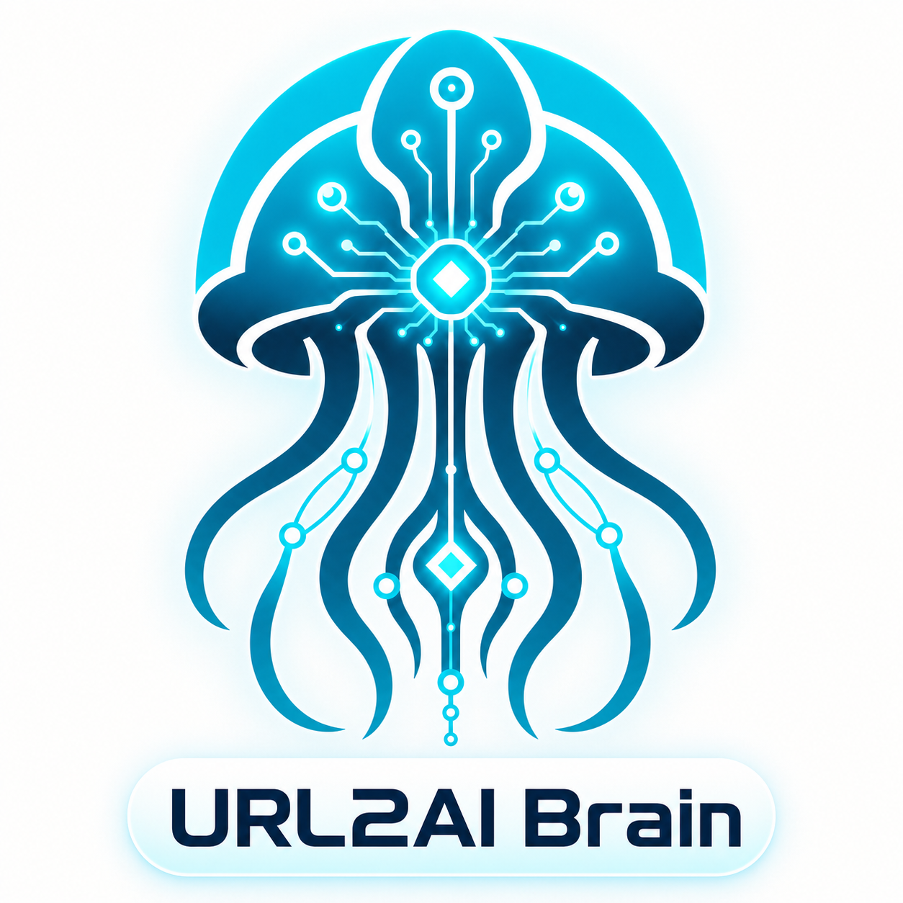

Kurage URL2AI Publisher
Human users sign in with X, paste a URL and publish through the visual URL2Pub workflow.
url2brain is the shared intelligence behind Kurage URL2AI Publisher and the open-source url2pub body. It analyzes a public URL, writes an announcement and a full article, and can publish through five real media routes. The OSS is free to self-host; hosted calls are metered at $1.00 through x402.

Improve url2brain once and both the human web app and the OSS agent workflow improve.
Human users sign in with X, paste a URL and publish through the visual URL2Pub workflow.
Authentication, UI, history and reward handling stay in the open-source body. The brain remains replaceable.
DeepSeek handles paid generation. The API has no caller social credentials; publishing uses controlled Kurage/EXBRIDGE destinations.
Every hosted path is $1.00 per request in USDC on Base.
| Group | Path | Result |
|---|---|---|
| Analyze | /url2brain/analyze/url | Structured URL content |
| Generate | /generate/announcement | Short social announcement |
| Generate | /generate/blog-article | Long-form article |
| Generate | /generate/from-url | Analyze + both generated formats |
| Publish | /post/bluesky | Bluesky post |
| Publish | /post/hatena-bookmark | Hatena Bookmark |
| Publish | /post/aixsns | AIxSNS post |
| Publish | /post/bludit | Kurage Blog article |
| Publish | /post/hatena-blog | Hatena Blog article |
Discoverable at bittensorman.xyz/.well-known/x402.json; payment itself authorizes the selected hosted action. $1.00 per call in USDC on Base.
Wallet-native access for agents at $1.00 per call, using the same nine-skill hosted brain. Open Bankr →
The same x402 provider (bittensorman, wallet 0x444fad…) is live and verified on PayAPI Market; agents that discover the provider there reach the identical hosted brain through the CDP gateway. Open PayAPI provider →
Listed as an x402 agent on Agent402 under the same provider and Base wallet, so agents that shop there can pay for and call the hosted skills. Open Agent402 agent →
Listed on Virtuals' ACP as part of the "Kurage AI Project", so agents can buy the nine URL-intelligence and publishing skills agent-to-agent through USDC escrow.
Live on RapidAPI. No wallet needed — card billing via an API key. Endpoint kurage-url2ai-brain.p.rapidapi.com. Open on RapidAPI →
Publishing is a real side effect. Paid /post/*
calls publish to Kurage/EXBRIDGE-controlled destinations. x402 payment is treated as explicit
posting authorization; callers cannot substitute their own account credentials or persona.